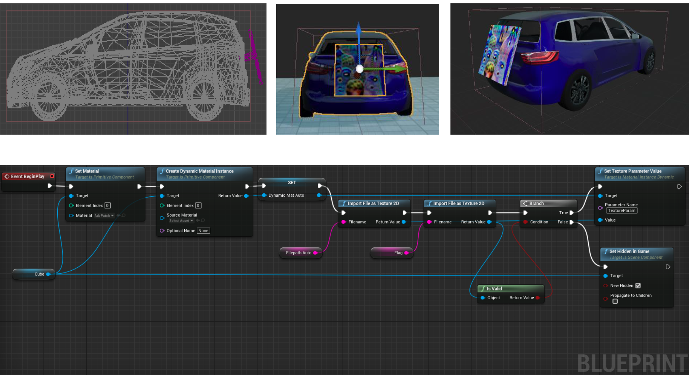

⚠️🚗 Adversarial Patch in CARLA
Allows evaluation of the adversarial patch's impact on object detection, while blending the patch visually with the scene for realism. It enables testing autonomous driving systems in near-real-world conditions.


Material Generation and Modified Adversarial Vehicle Blueprint
- ➤ Adversarial Patch Import into CARLA:
- Import the adversarial patch into Unreal Engine. Convert the trained patch image (.png/.jpeg) into a CARLA asset (.uasset). The patch can be attached to a moving actor (vehicle) or placed at a static location in the map.
- ➤ Material Instance Creation in Unreal Engine:
- Create a material instance in UE. Configure properties such as opacity: controls transparency and roughness: adjusts surface texture. Use metallic material with high roughness and opacity for better visibility. Assign the trained patch's file path in UE’s blueprint library. UE reads the image and converts it into a material instance.
- ➤ Applying Adversarial Patch as a CARLA Asset:
- ▶ Adversarial material instance created in UE can be applied to any CARLA asset, such as a vehicle or a static object.
- ▶ This integration ensures the patch appears as a natural and realistic part of the environment.
- ▶ Example setup: Attach the patch to a board mounted on a vehicle that moves randomly across the CARLA map.
- ▶ This dynamic setup allows for evaluating the impact of the patch on object detection during autonomous driving scenarios.
- ▶ A custom blueprint for the adversarial patch board is created in UE to enhance flexibility.
- ▶ The blueprint enables the selection of different patches dynamically, allowing experimentation with various designs.